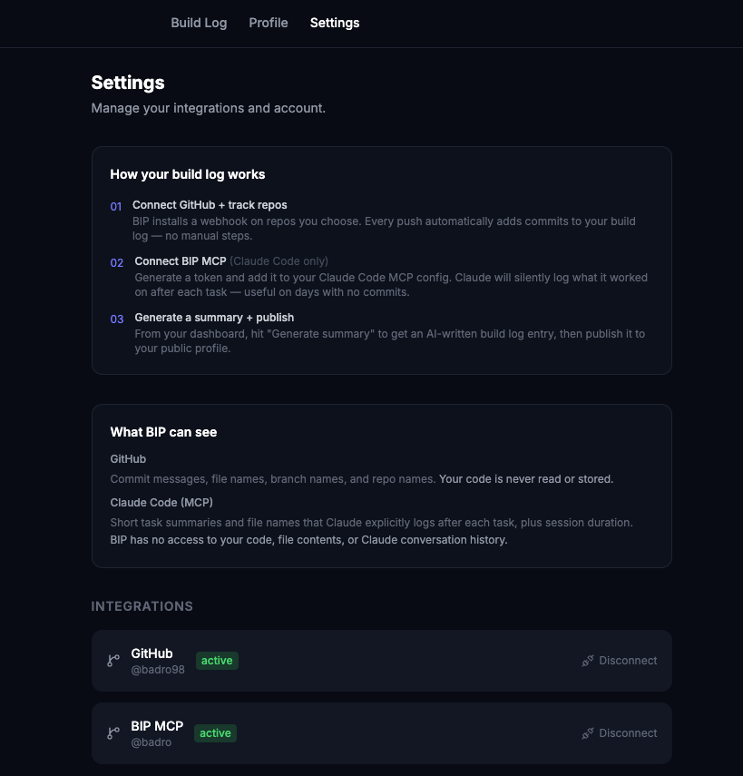

Project · Developer Tools
BIP — Build in Public
A platform that connects to your GitHub and Claude Code sessions, reads what you built that day, and writes the post for you. Building in public shouldn't require a separate writing session after a long build day.
The problem
When I started building, the consistent advice was to build in public — tweet what you shipped, share your progress, document the journey. Good advice. But after a six-hour build session, writing a coherent post about what you just did is the last thing you want to do. The friction kills it.
I was focused on shipping code. So I thought: why not build the tool that does the writing for me? Connect it to what I actually built that day, let it summarize, and give me something I can publish with minimal editing.

Build log — commits pulled automatically, AI summary generated on demand

Settings — GitHub webhook + BIP MCP for Claude Code, both active
How it works
Connect GitHub and BIP installs a webhook on the repos you choose. Every push automatically adds to your build log — no manual steps. Connect the BIP MCP to Claude Code and it silently logs task summaries after each session, even on days with no commits.
From the dashboard, hit "Generate summary" and BIP produces an AI-written entry from your day's commits and Claude Code activity. Review it, edit if needed, and publish to your public profile.
Critically, BIP only sees commit messages, file names, branch names, and Claude Code task summaries. It never reads your code or conversation history.

Public profile — build logs grouped by week, tagged by project
Key decisions
Decision 01
Summarization layer first, distribution laterThe temptation was to build the social publishing integration immediately — connect to Twitter, LinkedIn, post directly. Instead, the core loop (capture → summarize → publish to profile) was validated first. Distribution is only worth building once the underlying content is good.
Decision 02
MCP over manual inputRather than asking users to log what they worked on, BIP connects to Claude Code sessions via an MCP server. The agent silently records task summaries after each session. On days with no commits, the MCP fills the gap. The user never has to remember to log anything.
Decision 03
Live but unannouncedBIP is publicly accessible but hasn't been posted about anywhere. The core loop works and is being used daily to generate logs for BIP and pointd development. It'll be announced once the experience is solid enough to explain itself without context.
Where it's going
The current version handles the capture and summarization layer. What's next:
Social publishing
Connect the generated summaries directly to Twitter, LinkedIn, and long-form write-up formats. One click from the build log to published post — or daily/weekly/monthly digest formats for different cadences.
Interactive build feed
The longer-arc vision: a public feed where builders share not just text logs but fragments of what they built — interactive prototypes, UI components, features — that other people can try directly in the feed. A place where building in public means more than tweeting.